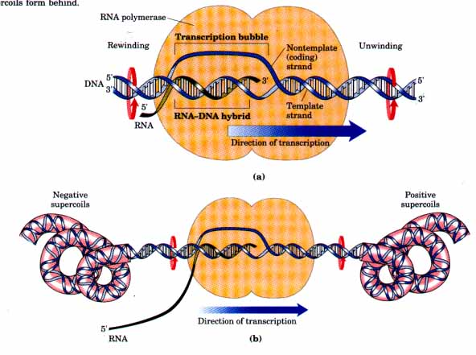
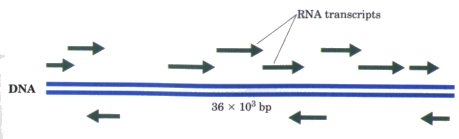
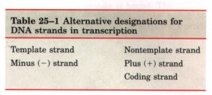
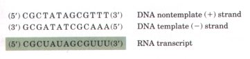
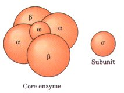
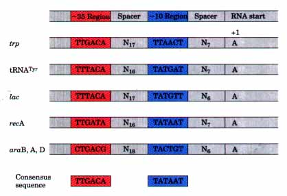
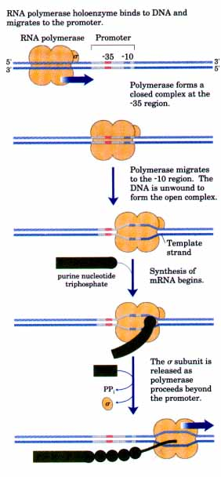

| (NMP)n + NTP | (NMP)n+1 + PPi | |
| RNA | Lengthened RNA |
The expression of the genetic information contained in a segment of DNA always involves the generation of a molecule of RNA. At first glance, a strand of RNA may seem quite similar to a strand of DNA, differing only in the hydroxyl group at the 2' position and the substitution of uracil for thymine. As we will see, however, these small differences confer on RNA the potential for much greater structural diversity than DNA, a diversity that allows RNA to assume a variety of cellular functions. RNA molecules not only carry and express genetic information, they can also act as catalysts.
RNA is the only macromolecule known to have both informational and catalytic functions, leading to much speculation that it may have been the essential chemical intermediate in the development of life on this planet. The discovery of catalytic RNAs has changed the very definition of the word "enzyme." Many RNAs are also complexed with proteins, forming complicated biochemical machines with a wide variety of functions.
With the exception of the RNA genomes of certain viruses, all RNA molecules are derived from information permanently stored in DNA. In a process called transcription, an enzyme system converts the genetic information of a segment of DNA into an RNA strand with a base sequence complementary to one of the DNA strands. Three major kinds of RNA are produced. Messenger RNA (mRNA) carries the sequences that encode the amino acid sequence of one or more polypeptides specified by a gene or set of genes in the chromosomes. Transfer RNA (tRNA) is an adapter that reads the information encoded in the mRNA and transfers the appropriate amino acid to the growing polypeptide chain during protein synthesis. Ribosomal RNA (rRNA) molecules associate with proteins to form the intricate protein synthetic machine, the ribosome. In addition, there are many specialized RNAs with regulatory or catalytic functions.
Replication and transcription differ in one important respect. During replication the entire chromosome is copied to yield daughter DNAs identical to the parent DNA, whereas transcription is selective: only particular genes or groups of genes are transcribed at any one time. The transcription of DNA can therefore be regulated so that only genetic information needed by the cell at a particular moment is transcribed. Specific regulatory sequences indicate the beginning and end of the segments of DNA to be transcribed, as well as which DNA strand is to be used as template. Regulation also involves a variety of proteins that will be described in more detail in Chapter 27.
In this chapter we begin by describing the synthesis of RNA on a DNA template, a process similar in many respects to DNA synthesis. We then turn to postsynthetic processing and turnover of RNA molecules. Many of the specialized functions of RNA will be encountered in this discussion of the posttranscriptional reactions. Indeed, the substrates for RNA enzymes are generally other RNA molecules. We conclude the chapter with an examination of systems in which RNA rather than DNA serves as a template for the transfer of genetic information. Here, the information pathways are expanded and come full circle, and template-directed nucleic acid synthesis is revealed as a process with standard rules that apply regardless of whether the template or product is RNA or DNA. This biological interconversion of DNA and RNA as information carriers leads finally to a discussion of the origin of biological information.
We can most usefully begin our discussion of RNA synthesis by comparing it with DNA replication as described in Chapter 24. Transcription is very similar to replication in terms of chemical mechanism, polarity (direction of synthesis), and use of a template. The two processes differ, however, in that transcription does not require a primer, it generally involves only short segments of a DNA molecule, and within those segments only one of the two DNA strands serves as a template. We begin our discussion by introducing the enzymes responsible far transcription.
The discovery of DNA polymerase and its dependence on a DNA template encouraged a search for an enzyme that synthesizes an RNA strand complementary to a DNA template. Such an enzyme, capable of forming an RNA polymer from ribonucleoside 5'-triphosphates, was isolated from bacterial extracts in 1959 by four independent research groups. This enzyme, DNA-directed RNA polymerase, requires, in addition to a DNA template, all four ribonucleoside 5'-triphosphates (ATP, GTP, UTP, and CTP) as precursors of the nucleotide units of RNA, as well as Mg2+. The purified enzyme also contains Zn2+. The fundamental chemistry of RNA synthesis has much in common with DNA synthesis. RNA polymerase elongates an RNA strand by adding ribonucleotide units to the 3'-hydroxyl end of the RNA chain and thus builds RNA chains in the 5'→3' direction. The 3'-hydroxyl group acts as nucleophile, attacking at the a-phosphate of the incoming ribonucleoside triphosphate (as illustrated for DNA synthesis in Fig. 24-5) and releasing pyrophosphate. The overall reaction is
| (NMP)n + NTP | (NMP)n+1 + PPi | |
| RNA | Lengthened RNA |
RNA polymerase requires DNA for activity and is most active with a double-stranded DNA as template. Only one of the two DNA strands is used as a template, copied in the 3'→5' direction (antiparallel to the new RNA strand) just as in DNA replication. Each nucleotide in the newly formed RNA is selected by Watson-Crick base-pairing interactions; uridylate (U) residues are inserted in the RNA opposite to adenylate residues in the DNA template, adenylate residues are inserted opposite to thymidylate residues. Guanylate and cytidylate residues in DNA specify cytidylate and guanylate, respectively, in the new RNA strand.
Unlike DNA polymerase, RNA polymerase does not require a primer to initiate synthesis. Initiation of RNA synthesis, however, occurs only at specific sequences called promoters (described below). RNA synthesis usually starts with a GTP or ATP residue, whose 5'triphosphate group is not cleaved to release PP; but remains intact throughout transcription. During transcription the new RNA strand base-pairs temporarily with the DNA template to form a short length of hybrid RNA-DNA double helix, which is essential to the correct readout of the DNA strand (Fig. 25-1). The RNA in this hybrid duplex "peels off' shortly after its formation.
To enable RNA polymerase to synthesize an RNA strand complementary to one of the DNA strands, the DNA duplex must unwind over a short distance, forming a transcription "bubble." During transcription, the E. coli RNA polymerase generally keeps about 1'l base pairs unwound, unwinding the DNA ahead and rewinding it behind. Because the DNA is a helix, this process requires considerable rotation of the nucleic acid molecules (Fig. 25-la). Rotation is restricted in most DNAs by DNA-binding proteins and other structural barriers, and a moving RNA polymerase generates waves of positive supercoils ahead of and negative supercoils behind the point at which transcription is occurring (Fig. 25-lb). This transcription-driven supercoiling of DNA has been observed both in vitro and, in bacteria, in vivo. In the cell, the topological problems caused by transcription are relieved through the action of topoisomerases. Once begun, transcription in E. coli proceeds at a rate of about 50 nucleotides per second.

Figure 25-1 Transcription by RNA polymerase in E. coli. To synthesize an RNA strand complementary to one of two DNA strands, the DNA is transiently unwound. Strand designations are summarized in Table 25-l. (a) About 17 base pairs are unwaund at any given time. A short RNA-DNA hybrid (about 12 base pairs) is present in the unwound region. The transcription bubble moves from left to right as shown, keeping pace with RNA synthesis. The DNA is unwound ahead and rewound behind as RNA is transcribed. Arrows show the direction in which the DNA and the RNA-DNA hybrid must rotate to permit this process. As the DNA is rewound, the RNA-DNA hybrid is displaced and the RNA strand is extruded. (b) Supercoiling of DNA brought about by transcription. Positive supercoils form ahead of the transcription bubble and negative supercoils form behind.
 The sequences of two complementary DNA strands are different, and the two strands serve different functions in transcription. A variety of designations are used to distinguish the two strands (Table 25-1). The strand that serves as template for RNA synthesis is called the template strand or minus (-) strand. In any chromosome, different genes may use different strands as template (Fig. 25-2). The DNA strand complementary to the template is called the nontemplate strand or plus (+) strand. It is identical in base sequence with the RNA transcribed from the gene, with U in place of T (Fig. 25-3). The nontemplate strand is also sometimes called the coding strand, even though it has no direct function in either transcription or protein synthesis. The regulatory sequences needed for transcription (described later in this chapter) are by convention given as sequences in the nontemplate (or coding or +) strand. |
Figure 25-2 The genetic information of the adenovirus is
encoded by a double-stranded DNA molecule (36,000 base
pairs), both strands of which encode proteins. The
information for most proteins is encoded by the top
strand (transcribed left to right), but some is encoded
by the bottom strand and is transcribed in the opposite
direction. Synthesis of mRNAs in adenovirus is actually
much more complex than shown here. Many of the mRNAs
shown for the upper strand are initially synthesized as
one long transcript derived from more than two-thirds of
the length of the DNA. The transcript is extensively
processed to produce the mRNAs for most of the individual
gene products. Adenovirus causes some types of upper
respiratory tract infections in some vertebrates.  |
 |
Figure 25-3 The two complementary strands of DNA are defined by their function in transcription. The RNA transcript is synthesized on the complementary template ( - ) strand, and it is identical in sequence (with U in place of T) to the nontemplate (+) or coding strand. |
E. coli has a single DNA-directed RNA polymerase that synthesizes all types of RNA. It is a large (Mr 390,000) and complex enzyme, containing five core subunits and a sixth subunit, called σ or σ70(Mr 70,000), that binds transiently to the core and directs the enzyme to specific initiation sites on the DNA (described below). These six subunits constitute the RNA polymerase holoenzyme (Fig. 25-4). RNA polymerases, whether from E. coli or other organisms, lack a proof reading 3'→5' exonuclease activity such as that found in many DNA polymerases. As a result, during transcription about one error is made for every 104 to 105 ribonucleotides incorporated into RNA. Given that many copies of an RNA are generally produced from a single gene and that all of the RNAs are eventually degraded and replaced, a rare mistake in an RNA molecule is of less consequence to the cell than a mistake in the permanent information stdred in DNA. |
 Figure 25-4 The subunit structure of E. coli RNA polymerase. The α (of which there are two), β,β', ω, and σ subunits have molecular weights of 36,500 151,000, 155,000, 11,000, and 70,000, respectively. The σ subunit is also called σ70. The catalytic site for RNA synthesis is believed to be in the β subunit.
|
| Initiation of RNA synthesis at random points in a DNA molecule would be an extraordinarily wasteful process. Instead, the RNA polymerase binds to specific sequences in the DNA called promoters, which direct the transcription of adjacent segments of DNA (genes). The sequences adjacent to genes where RNA polymerases must bind can be quite variable, and much research has focused on identifying the sequences that are critical to promoter function. Analysis and comparison of sequences in many different bacterial promoters have revealed similarities in two short sequences located about 10 and 35 base pairs away from the point where RNA synthesis is initiated (Fig. 25-5). By convention the base pair that begins an RNA molecule is given the number +1, so these sequences are commonly called the -10 and -35 regions. The sequences are not identical for all bacterial promoters, but certain nucleotides are found much more often than others at each position. The most common nucleotides form what is called a consensus sequence (recall the consensus sequences of orLC in the E. coli chromosome; see Fig. 24-10). For most promoters in E. coli and related bacteria, the consensus sequence for the -10 region talso called the Pribnow box) is (5')TATAAT(3'), and the consensus sequence at the -35 region is (5')TTGACA(3'). |  Figure 25-5 The sequences of five E. coli promoters. These include promoters for genes involved in tryptophan, lactose, and arabinose metabolism. The ssquences vary from one promoter to the next, but comparisons of many promoters reveal similarities in the -10 and -35 regions. The consensus sequences of the -10 and -35 regions are shown at the bottom. The -10 region is often called the Pribnow box, after David Pribnow, the investigator who first recognized it in 1975. All sequences shown are those of the coding (nontemplate) strand and read 5'→3', left to right, as is the convention in representations of this kind. The spacer regions contain variable numbers of nucleotides (N). Only the first nucleotide coding the RNA transcript (at position +1) is shown. |
Many independent lines of evidence attest to the functional importance of these sequences. Mutations that affect the function of a given promoter usually involve one of the base pairs in the -35 or -10 region. Natural variations in the consensus sequence also affect the efficiency of RNA polymerase binding and transcription initiation. Differences of a few base pairs can decrease the rate of initiation by several orders of magnitude, providing one means by which E. colL can modulate the expression of different genes. In addition, specific binding of RNA polymerase to these sequences has been directly demonstrated in vitro (Box 25-1).
RNA polymerase binds to the promoter in at least two distinguishable steps (Fig. 25-6). The holoenzyme first binds the DNA and migrates to the -35 region, forming what is called the "closed complex." The DNA is then unwound for about 17 base pairs beginning at the -10 region, exposing the template strand at the initiation site. The RNA polymerase binds more tightly to this unwound region, forming an "open complex" (the name reflects the state of the DNA). RNA synthesis then begins. The binding of RNA polymerase to promoters is facilitated by the supercoiling (underwinding) of the DNA, which may be one of the reasons why cellular DNA is maintained in an underwound or supercoiled state.
The σ subunit is required only to ensure the specific recognition of the promoter by the RNA polymerase. Once a few phosphodiester bonds are formed the σ subunit dissociates, leaving the core polymerase to complete synthesis of the RNA molecule.
| Figure 25-6 Steps in the initiation of transcription by
E. coli RNA polymerase. RNA polymerase binding to a
promoter requires two steps: formation of the closed and
open complexes. Messenger RNA synthesis is almost always
initiated with a purine (Pu) nucleotide. N is any
nucleoside. Some E. coli promoters differ greatly from the standard promoters described above, and recognition of these promoters by RNA polymerase is mediated by different σ factors. An example occurs in a set of genes called the heat-shock genes, which are induced (their gene products are made at higher levels) when the cell is under the stress that accompanies an insult such as a sudden temperature jump. RNA polymerase binds to these promoters when its normal σ subunit (designated σ70because it has a molecular weight of 70,000) is replaced with a different σ subunit that is specific for the heat-shock promoters (see Fig. 27-3). This distinct σ subunit has a molecular weight of 32,000 and is therefore called σ32. The use of different Q factors allows the cell to coordinately express sets of genes involved in major changes in cell physiology. |
 |
|